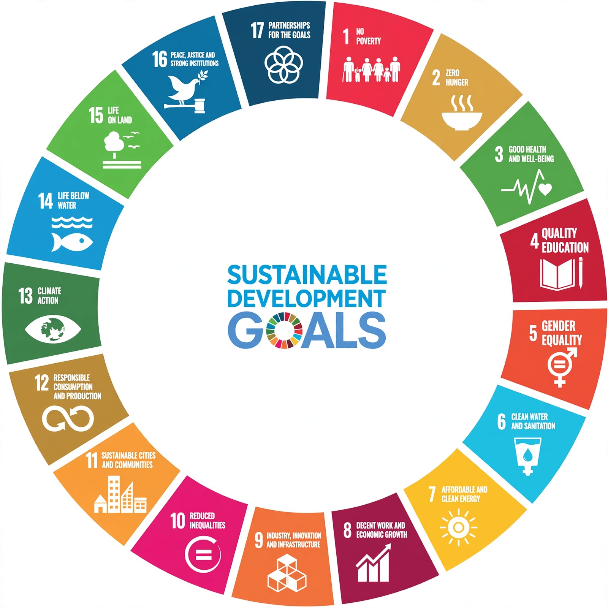

Sustainable development

Sustainable development is development that, in the classic definition of the Brundtland Commission (1987), 'meets the needs of the present without compromising the ability of future generations to meet their own needs'. It seeks to reconcile economic progress, social wellbeing and environmental protection rather than treating them as rivals.
The idea moved from the 1972 Stockholm conference through Our Common Future (1987) and the {L('Earth_Summit')} (1992) to become the organising frame of global policy.
The Sustainable Development Goals
In 2015 the United Nations adopted the 2030 Agenda with 17 Sustainable Development Goals (SDGs) — from ending poverty and hunger to clean water, affordable clean energy, climate action and life below water and on land — each with targets tracked by indicators. The goals are universal: they apply to rich countries as much as poor ones.
Progress assessments so far find the world off track on most goals, with the pandemic, wars and food and energy shocks reversing some gains; the environmental goals, including climate, are among the furthest behind.
Debates
Critics from one side call sustainable development an oxymoron that papers over the conflict between endless material growth and finite planetary limits — the debate between 'green growth' and degrowth. Others defend it as the only frame politically broad enough to hold together development and environment agendas. Concepts such as planetary boundaries quantify the safe operating space the idea appeals to. See {L('Sustainability')} and {L('Environmental_protection')}.
See also: Sustainability · Earth Summit · Environmental protection · Climate change · United Nations